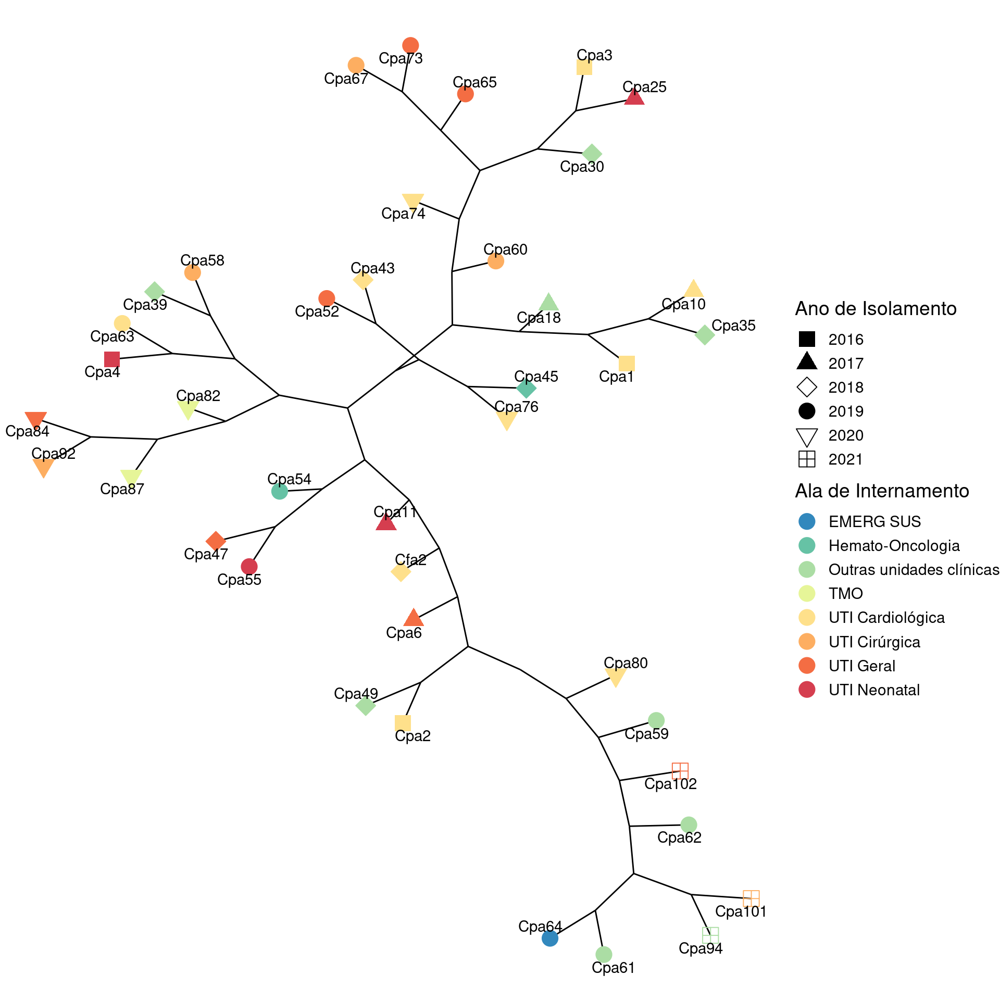

Grafo: dados de microssatélite de isolados de C. parapsilosis
Luiza Souza Rodrigues e Henrique Laureano
Last modification on 2022-09-20 16:05:53
Dendrograma
Grafos



Referências
A análise estatística foi realizada no ambiente de computação estatística R (R Core Team 2022). Os principais pacotes
Rutilizados foram o {cluster} (Maechler et al. 2022) e o {ggraph} (Pedersen 2022).Para clusterização utilizamos a rotina
agnes(Agglomerative Nesting - Hierarchical Clustering), baseada numa generalização do algoritmo UPGMA (Kaufman and Rousseeuw 1990; Belbin, Faith, and Milligan 1992; Struyf, Hubert, and Rousseeuw 1997).
Belbin, L., D. P. Faith, and G. W. Milligan. 1992. “A Comparison of Two Approaches to Beta-Flexible Clustering.” Multivariate Behavioral Research 9: 373–80.
Kaufman, L., and P. J. Rousseeuw. 1990. Finding Groups in Data: An Introduction to Cluster Analysis. Wiley, New York.
Maechler, Martin, Peter Rousseeuw, Anja Struyf, Mia Hubert, and Kurt Hornik. 2022. cluster: Cluster Analysis Basics and Extensions. R package version 2.1.3. https://CRAN.R-project.org/package=cluster.
Pedersen, Thomas Lin. 2022. ggraph: An Implementation of Grammar of Graphics for Graphs and Networks. R package version 2.0.6. https://CRAN.R-project.org/package=ggraph.
R Core Team. 2022. R: A Language and Environment for Statistical Computing. Vienna, Austria: R Foundation for Statistical Computing. https://www.R-project.org/.
Struyf, A., M. Hubert, and P. J. Rousseeuw. 1997. “Integrating Robust Clustering Techniques in S-PLUS.” Computational Statistics and Data Analysis 26: 17–37.